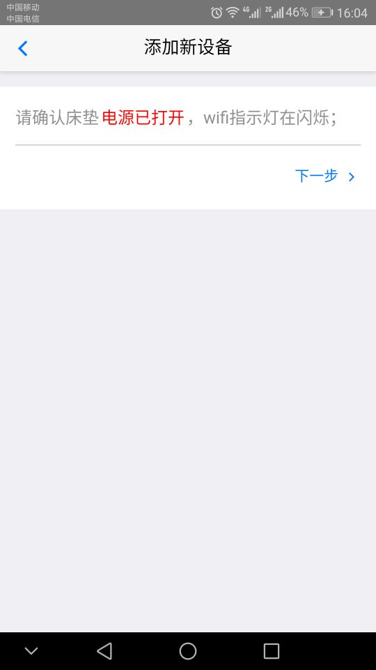
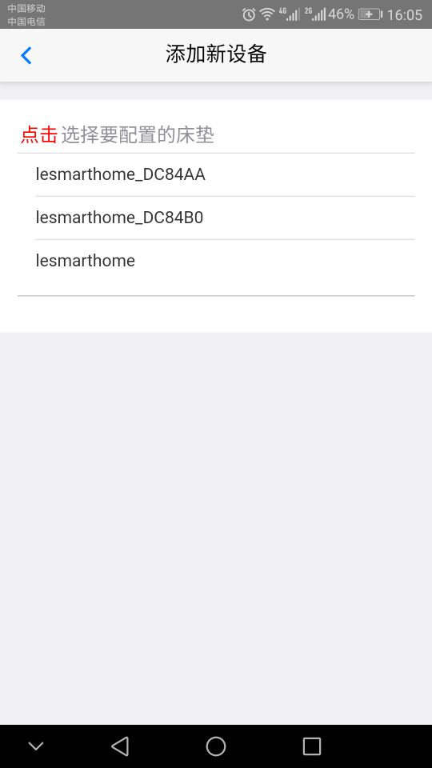
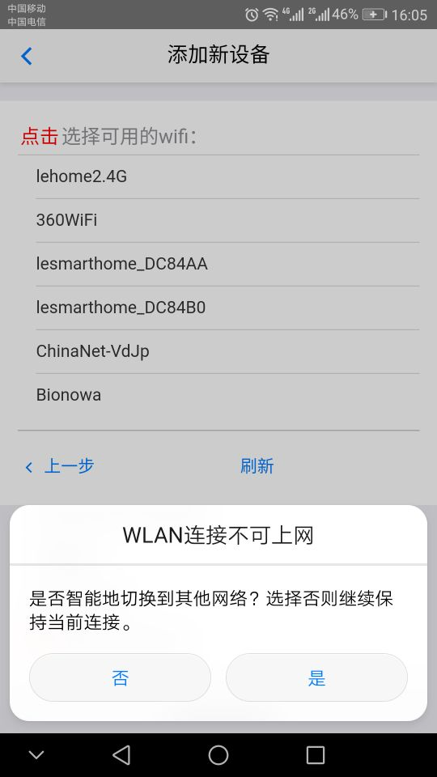
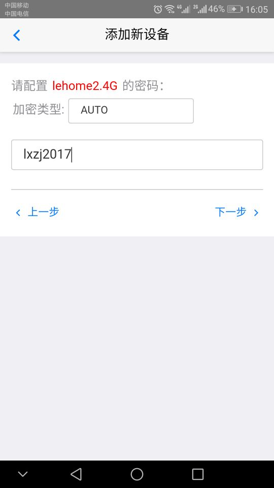

添加新床垫
添加新设备首先要为床垫配网，配网功能是为智能床垫绑定您期望绑定的WIFI路由器， 建议选择WIFI信号较强的路由器，将WIFI帐号和密码设置在智能床垫中，完成智能床垫与家中WIFI路由器的绑定，可通过家中WIFI路由器与智能睡眠云端服务器进行通讯，以便于手机随时随地对床垫进行远程控制和设置智能预约。
配网流程
- 首先为智能床垫通电，通电后，若床垫会发出“滴”的一声，则表示床垫正常工作；
- 智能床垫通电后会检测是否已经绑定到家中的WIFI路由器，如果没有绑定到家中的WIFI路由器，则WIFI指示灯会闪烁，此时您需要用手机APP的配网功能给床垫进行配网；如果已绑定到家中的WIFI路由器，则床垫上WIFI指示灯常亮；
- 打开手机APP进入“设备列表”页面，点击“配置新设备”按钮，进入“配置新设备页面”，仔细阅读操作提示，确认床垫电源打开且wifi指示灯闪烁后，按照提示点击按钮自动获取wifi列表并连接硬件wifi（本过程可能需要较长时间，请耐心等待）；


- 当连入床垫后，选择需要连接的家用路由器，对网络名称、加密类型、加密算法、密码等进行选择和输入，设置生效之后将执行设备绑定，成功后自动进入设备列表页面；


- 床垫配网成功后，会自动注册到智能理疗床垫的云端服务器，此过程需要十几秒，当注册成功时，床垫会发出“滴”的一声。这时，页面显示的是本智能床垫的设备名，此时点击该设备并选择设备查看，可进入该床垫的控制主页面，可对智能理疗床垫进行功能设置；
添加已有床垫
- 如果床垫已配网成功(即已经通过一个账号完成床垫与家中WIFI路由器之间的绑定)，如果其他账号同样需要绑定此设备，可以选择“设备列表”中的“添加老设备”功能，扫描由已绑定成功账号所生成的二维码，完成当前账号的绑定操作，通过此账号也可进行远程控制或智能预约；
- 如果床垫已配网并成功注册到云端服务器，假如您想要更改绑定的路由器，则只需点击该设备功能列表中的解除绑定按钮，即可重新为床垫配网；
操作床垫
- 设备管理页面中，如果您已经添加绑定床垫，此时点击该床垫设备名即可根据您的需要对床垫进行设备查看、生成二维码、重命名和解除绑定的操作；
- 手机APP可同时远程控制多个床垫，建议您根据自己的喜好重新命名此床垫，如命名为“主卧室床垫”等。